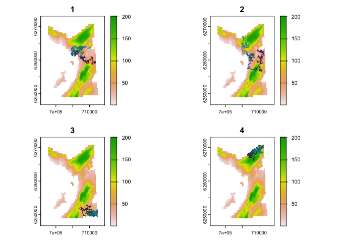

Particle algorithms for animal movement modelling in R
patter provides particle filtering, smoothing and sampling algorithms for animal movement modelling, with a focus on passive acoustic telemetry systems. This wraps and enhances a fast Julia backend (Patter.jl). The methodology enables the reconstruction of movement paths and patterns of space use. patter unifies a suite of methods formerly known as the flapper algorithms and supersedes the experimental flapper package (Lavender et al., 2023).
Note:
patteris a newRpackage. Like all new packages, you should use it with a degree of caution. Please share feedback and issues.
NEWS Welcome to
patter v.2.0.0! This includes some breaking changes. For projects based on earlier versions, userenv. For future projects,patter v.2.0.0is recommended.
Highlights
patter is designed to reconstruct movement paths and emergent patterns of space use from animal tracking data. A powerful, flexible, process-orientated, particle-based framework is used for this purpose. This framework unifies the flapper algorithms and provides important opportunities for development, which we exploit here.
The essential functions are pf_filter() and pf_smoother_*():
-
pf_filter()is the particle filter. This simulates the possible locations of an individual moving forwards in time, accounting for all of the data (for example, acoustic observations, depth observations and any other observations) up to each time point and the animal’s movement (a partial marginal distribution). -
pf_smoother_*()is a particle smoothing algorithm. At each time step, the smoother accounts for all of the data from both the past and the future (the full marginal distribution) and substantially refines maps of space use.
We hope to add backward sampling algorithms to the package in due course.
Evolution
patter evolved from the experimental flapper package, but is:
- More powerful, with a substantially revised methodology;
- Faster, with overhauled internal routines;
- Simpler to use and maintain;
- Stable, with fewer dependencies and an upgraded spatial ecosystem;
- Better tested, with comprehensive unit tests (in progress!);
See NEWS for a summary of the evolution of flapper to patter.
At the time of writing (May 2024), patter is more streamlined than flapper and focuses on the implementation of fast particle-based algorithms for the reconstruction of movements and patterns of space use. Please get in touch if you would like to see additional functionality brought into patter.
Installation
Note:
patterworks Windows, MacOS and Linux (with some restrictions). On Windows, everything should work if you follow the instructions below. On MacOS, some additional set up (such as compiler configuration) may be required, depending on your set up. On Debian/Ubuntu, {patter} can be used but you cannot simultaneously use geospatial routines inRandJulia. Thus, you can only calllibrary(terra)orterra::foo()and use {patter} routines that exploitterraand other geospatial packages inRsessions that are not connected to aJuliasession (viajulia_connect()). We haven’t tried other Linux distributions. Package examples were written on MacOS and may not run safely on Linux without modification. Check the function documentation for supported options and share your experience. In case of issues, you should be able to usePatter.jldirectly, which on some systems may be simpler than gettingRandJuliato play together!
Install
R. This package requiresRversion ≥ 4.1 (but the most recent version is recommended). You can check your version from theRconsole usingR.version.string.Install build packages. Package installation and configuration (may) require the
devtools,pkgbuildandrmarkdownpackages. Install them with:
install.packages(c("devtools", "pkgbuild", "rmarkdown"))On Linux, this step may require system libraries (see below).
- Install system libraries.
-
On Windows, package building requires
RTools. You can check whetherRToolsis installed withpkgbuild::has_rtools(). IfRToolsis not installed, it is necessary to download and install the appropriate version ofRToolsbefore proceeding by following the instructions here. - On MacOS, some system-specific step up (e.g., compiler configuration) may be required. Follow the steps below and address any issues as required for your system.
-
On Linux, a suite of system libraries, including
GDAL,GEOSandPROJ, are required. See the package DESCRIPTION for required/suggested packages and follow the instructions for your system. On Debian/Ubuntu, seer2uor follow the instructions below to get up and running.Click for system dependency installation instructions on Ubuntu.
sudo apt update # `make` utility required to compile packages e.g., data.table sudo apt install build-essential # Geospatial dependencies for {terra} sudo add-apt-repository ppa:ubuntugis/ubuntugis-unstable sudo apt install libgdal-dev libgeos-dev libproj-dev # `ffpmeg` and `libavfilter-dev` for {av} (suggested) sudo apt install ffmpeg sudo apt install libavfilter-dev # `GSL` for {RcppGSL} for {Rfast} (suggested) sudo apt install libgsl-dev # `gfortran` for {classInt} -> {sf} (suggested) sudo apt install gfortran # `units` for {units} -> {sf} (suggested) sudo apt install libudunits2-dev
-
Install
Julia.Juliais high-performance programming language thatpatteruses as a backend. If you do not haveJuliainstalled on your system, follow the instructions below to installJulia.A. On Windows, the easiest option is to download and install
Juliafrom JuliaLang. During installation, checkAdd Julia to PATH.B. Another option is to use
juliaup. Some users have found this easier onMacOSbecause you don’t have to worry about finding the rightJuliainstallation for your architecture.-
Install the
juliaupinstaller, following the instructions here. For example, onMacOS, open the shell (Terminal) and type: -
In the shell, then install
Julia1.10.5 viajuliaup:
-
Note: Install a recent
Juliaversion. At the time of writing (December 2024),Julia1.10.5 (long-term release) is recommended, as we run most tests against that version. However,Julia1.11 is now also supported byJuliaCall(see here). This README was last built on 2024-12-29 with Julia 1.10.5.
-
Setup JuliaCall. The next step is to set up
JuliaCall, which provides the integration betweenRandJulia.
# Install the {JuliaCall} package:
install.packages("JuliaCall")
# Use the development version if the CRAN version is unavailable:
devtools::install_github("JuliaInterop/JuliaCall",
dependencies = TRUE)
# Run julia_setup() to set up the Julia installation
# * This includes an installJulia argument if the above Julia installation options fail
# * Set `JULIA_HOME` if Julia is not found (see `?julia_setup()`)
# * Note this may take several minutes
library(JuliaCall)
julia <- julia_setup()
# Validate the Julia installation:
# * TRUE: `Julia` is working!
# * FALSE: `Julia` is not working (see below)!
isTRUE(try(julia_eval('true'), silent = TRUE))If julia_setup() fails with 'Julia is not found', you should tell R the location of the Julia binary via JULIA_HOME (see ?JuliaCall::julia_setup() and the JuliaCall README for troubleshooting and ways to get help).
-
Install
patter. To installpatterfrom themainbranch, use:
devtools::install_github("edwardlavender/patter",
dependencies = TRUE,
build_vignettes = rmarkdown::pandoc_available())The dependencies = TRUE argument ensures that suggested packages are also installed, which are required for some functions and to build vignettes. This process may take several minutes. Set build_vignettes = FALSE for a faster installation.
To install patter from the development (dev) branch, if available, use:
devtools::install_github("edwardlavender/patter@dev",
dependencies = TRUE,
build_vignettes = rmarkdown::pandoc_available())This branch may include bug fixes and new features but should be used with caution.
We recommend using renv (or similar) and RStudio Projects to track the version of patter that you use in your projects. This will ensure that your code continues to work, even if we have to make breaking changes to patter as the package evolves in response to user feedback.
-
Connect to
Julia. At the start of everyRsession, you need to connectRtoJulia(andpattertoPatter.jl):
# Load & attach {patter}:
library(patter)
# Option (A): Connect to `Julia`:
# * Set JULIA_HOME if 'Julia not found'
# * Set JULIA_PROJ to use a local Julia project (recommended)
# * Set JULIA_NUM_THREADS to exploit multi-threading (recommended)
# * See `julia_connect()` for guidance
julia <- julia_connect()The first time you run julia_connect(), it will connect to Julia and install (and pre-compile) Patter.jl and the additional Julia dependencies. This usually takes up to five minutes on first run but may take up to twenty minutes depending on the speed of your machine. Subsequent julia_connect() calls will be faster.
-
Validate the
R—Juliaconnection. To validate thatpatterworks on your system, run:
This should return NULL, invisibly, in which case you are good to go. Otherwise, the function will return an error (or R may crash).
- (optional) Run package checks. To run package checks locally, follow the instructions in dev/001-check.R. Issue reports are appreciated.
Functionality
Vignettes
For an introduction to patter, use:
-
vignette("a-methodology", package = "patter")for a conceptual introduction to the methodology; -
vignette("b-workflow-outline", package = "patter")for an overview of the workflow;
For a full list of all functions, see help(package = 'patter').
For a glossary of key arguments, see glossary.
Datasets
For example datasets from the Movement Ecology of Flapper Skate project (datasets-mefs), which inspired patter, see:
-
dat_mooringsfor acoustic receiver deployments; -
dat_detectionsfor acoustic detection time series; -
dat_archivalfor archival (depth) time series; -
dat_gebco()for a bathymetry grid;
To validate new datasets for use with patter, see pat_setup_data() and/or the assemble_*() function documentation.
For example algorithm outputs (datasets-algorithms), see:
-
dat_path()for an example output fromsim_path_walk(); -
dat_coa()for an example output fromcoa(); -
dat_pff()anddat_pfb()for an example output frompf_filter(); -
dat_tff()for an example output frompf_smoother_two_filter();
Set up Julia
To link patter and the Patter.jl Julia backend, use:
-
julia_connect()to connect toRtoJulia; -
julia_validate()to validate theR—Juliaconnection; -
set_seed()to set the seed inRandJulia; -
set_map()to make aSpatRasterof the study area available inJulia;
These functions should be run at the start of every R session.
Abstract Types
patter is based on three Abstract Types, defined in Julia:
-
Statestructures hold the state (location) of an animal at a given time step; -
ModelMovestructures hold movement model, used to simulate new states; -
ModelObsstructures hold observation model parameters, used to evaluate the correspondence between simulated states and observations;
Simulation
To simulate animal movement time series, see:
-
sim_path_walk()to simulate a movement path from a walk model (viaModelMove); -
sim_array()to simulate an acoustic array; -
sim_observations()to simulate observational time series (viaModelObs);
To evaluate model skill in reconstructing simulated patterns, see skill_*() functions:
-
skill_mb()to calculate mean bias; -
skill_me()to calculate mean error; -
skill_rmse()to calculate root mean squared error; -
skill_R()to calculate Spearman’s rank correlation coefficient; -
skill_d()to calculate the index of agreement;
Data exploration
For help with data acquisition, processing, checking and preliminary analyses, see the flapper package. This facilitates:
- Data preparation;
- Spatial operations;
- Distance calculations;
- Movement analyses;
Please submit a feature request if you would like functions from flapper in patter.
Algorithms
The main thrust of patter is the provision of fast, integrated modelling workflow based on particle filtering for reconstructing animal movement paths and emergent patterns of space use from observational time series (with a focus on passive acoustic telemetry systems).
To assemble datasets for particle filtering, use assemble_*() functions:
-
assemble_timeline()assembles a timeline; -
assemble_acoustics()assembles an acoustic time series; -
assemble_acoustics_containers()assembles a corresponding time series of acoustic containers; -
assemble_archival()assembles an archival time series; -
assemble_custom()assembles custom time series;
Ancillary time series should be structured in the same way for inclusion in the particle filter.
To implement particle filtering (PF) routines, use:
-
pf_filter()to implement the particle filter; -
pf_smoother_two_filter()to implement the two-filter smoother;
These functions return pf_particles-class objects.
For convenience plotting functions, see:
-
pf_plot_xy()to plot particle locations;
For mapping utilisation distributions, use:
-
map_pou()to map probability-of-use; -
map_dens()to create smooth maps usingspatstat, plus the supporting functions:-
as.im.SpatRaster(), to convertSpatRasters to pixel images; -
as.owin.SpatRaster(), to convertSpatRasters to observation windows; -
as.owin.sf(), to convertsfobjects to observation windows;
-
-
map_hr_*()to map home ranges, specifically:-
map_hr_prop()for a custom range; -
map_hr_core()for the ‘core’ range; -
map_hr_home()for the ‘home’ range; -
map_hr_full()for the full range;
-
Usage
Set up
This is the basic patter workflow to reconstruct movement paths and patterns of space use from animal tracking data. First, we load some essential packages:
library(patter)
#> This is {patter} v.1.0.1. For an overview, see `?patter`. For support, contact edward.lavender@eawag.ch.
library(data.table)
library(dtplyr)
library(dplyr, warn.conflicts = FALSE)
options(patter.verbose = FALSE)Second, we connect R to Julia and set the seed in R and Julia to ensure reproducibility of our simulations:
Third, we define the properties of our study area; namely, a SpatRaster of our study area that defines the area within which movements are possible and the timeline over which we will model movements:
# Define map
# * Use file path on Linux
map <- dat_gebco()
set_map(map)
# Define timeline
timeline <- seq(as.POSIXct("2016-03-17 01:50:00", tz = "UTC"),
as.POSIXct("2016-03-18 01:48:00", tz = "UTC"),
by = "2 mins")Movement
We will reconstruct the movements of a tagged flapper skate (Dipturus intermedius) within a study area off the west coast of Scotland, based on electronic tagging and tracking data. To do so, we need a model for the individual’s movements and a series of observation models that connect movements to observations. In this example, we are interested in the two-dimensional (x, y) location of our animal through time (that is, the animal’s ‘state’ is an object of type StateXY). The animal can move up to 750 m in two minutes, which is the resolution at which we will model movement, and we formulate a random walk model accordingly based on step lengths and headings:
# Define the animal's state:
state <- "StateXY"
# Formulate a corresponding movement model:
mobility <- 750.0
model_move <- model_move_xy(.mobility = "750.0",
.dbn_length = "truncated(Gamma(1, 250.0), upper = 750.0)",
.dbn_heading = "Uniform(-pi, pi)")
# Visualise realisations of the movement model (Windows/MacOS):
map |>
sim_path_walk(.timeline = timeline,
.state = state,
.model_move = model_move,
.n_path = 4L, .one_page = TRUE) |>
invisible()
Observations
We have collected acoustic and archival (depth) observations from tagged flapper skate. Let’s pull out the time series for a selected individual:
# Define acoustic detections
det <-
dat_detections |>
filter(individual_id == 25L) |>
mutate(individual_id = NULL) |>
as.data.table()
# Define archival (depth) observations
arc <-
dat_archival |>
filter(individual_id == 25L) |>
mutate(individual_id = NULL,
depth_sigma = 50,
depth_deep_eps = 50) |>
rename(obs = depth) |>
as.data.table()Individual movements are connected to the observations by models of the observation process for each dataset. Without going into details, here we bundle together the observations with the parameters of the observation models:
# ModelObsAcousticLogisTrunc
acoustics <- assemble_acoustics(.timeline = timeline,
.detections = det,
.moorings = dat_moorings)
# ModelObsAcousticContainers
containers <- assemble_acoustics_containers(.timeline = timeline,
.acoustics = acoustics,
.mobility = mobility)
# ModelObsDepthNormalTruncSeabed
archival <- assemble_archival(.timeline = timeline,
.archival = arc)
# Named lists of ModelObs sub-types and associated observations
# * The container dataset is direction specific so we assemble two yobs lists
yobs_fwd <- list(ModelObsAcousticLogisTrunc = acoustics,
ModelObsAcousticContainer = containers$forward,
ModelObsDepthNormalTruncSeabed = archival)
yobs_bwd <- list(ModelObsAcousticLogisTrunc = acoustics,
ModelObsAcousticContainer = containers$backward,
ModelObsDepthNormalTruncSeabed = archival)Of course, you do not need acoustic and archival data to implement the algorithms (these are just the data we have collected from flapper skate)—other datasets can be used just as easily. To simulate observations instead, see sim_observations().
Particle filter
We are now in a position to run the particle filter. This runs a simulation forwards (or backwards) in time, sampling states (locations, termed ‘particles’) that are consistent with the movement model and the observations up to and including each time point. We end up with a time series (data.table) of particles that approximate the partial marginal distribution for the location of the animal, at each time step:
# List filter arguments
args <- list(.timeline = timeline,
.state = state,
.yobs = yobs_fwd,
.model_move = model_move,
.n_record = 1000L,
.n_particle = 2e3L)
# Forward run
fwd <- do.call(pf_filter, args, quote = TRUE)
head(fwd$states)
#> path_id timestep timestamp map_value x y
#> <int> <int> <POSc> <num> <num> <num>
#> 1: 1 1 2016-03-17 01:50:00 74.88351 709042.1 6253107
#> 2: 1 2 2016-03-17 01:52:00 42.39980 709434.1 6252826
#> 3: 1 3 2016-03-17 01:54:00 74.88351 709057.3 6253116
#> 4: 1 4 2016-03-17 01:56:00 59.76520 709130.0 6252981
#> 5: 1 5 2016-03-17 01:58:00 76.37878 709425.0 6253693
#> 6: 1 6 2016-03-17 02:00:00 50.71592 709162.2 6252838
# Backward run
args$.yobs <- yobs_bwd
args$.direction <- "backward"
bwd <- do.call(pf_filter, args, quote = TRUE)Particle smoother
Particle smoothers refine the outputs from the particle filter. Smoothed particles approximate the full marginal distribution for the location of the individual at each time step (accounting for all of the data before and after each step).
# Set `vmap` for probability calculations
# * Use file path rather on Linux
set_vmap(.map = map, .mobility = mobility)
# Run smoother
smo <- pf_smoother_two_filter(.n_particle = 750L, .n_sim = 100L)Mapping
Particles can be used to reconstruct movement paths and patterns of space use. We can estimate a utilisation distribution from our particle samples as follows:
# Estimate UD
# * This must be done in a separate R session on Linux
ud <- map_dens(.map = map,
.coord = smo$states,
.sigma = bw.h)$ud
#> Observation window is gridded.
# Add home range
map_hr_home(ud, .add = TRUE)
mtext(side = 4, "Probability density", line = -3)
This basic workflow is highly customisable. You have the flexibility to define species-specific movement models, include any type of observational dataset and implement system-specific observation models. See the vignettes and function examples for further details and reach out with queries.
Resources
For full details on the methods, see the references below.
For further information of the patter package, see:
-
?patter::patterfor an overview of package functions; -
?patter::pf_filterfor information on specific functions (such aspf_filter()); -
patter-workshopsfor introductory materials;
For further code examples, see:
-
patter-demofor simple demonstrations; -
patter-evalfor a simulation-based workflow and analysis; -
patter-flapperfor a real-world analysis on flapper skate;-
patter-troutfor a real-world analysis on lake trout;
-
Note that the code base in some repositories may be outdated.
Disclaimer and troubleshooting
patter is a new R package. All routines are experimental. Researchers interested in using the package are encouraged to get in touch while the methods and package remain at an early stage of evolution (edward.lavender@eawag.ch).
Citation
To cite patter in publications, please use:
- Lavender, E. et al. (2024). Particle algorithms for animal movement modelling in autonomous receiver networks. bioRxiv. https://doi.org/10.1101/2024.09.16.613223.
- Lavender, E. et al. (2024). Particle algorithms for animal tracking in
RandJulia. bioRxiv. https://doi.org/10.1101/2024.07.30.605733 - Lavender, E. et al. (in prep). Animal tracking for conservation with particle algorithms.
Please note that patter is released with a Contributor Code of Conduct. By contributing to this project, you agree to abide by its terms.